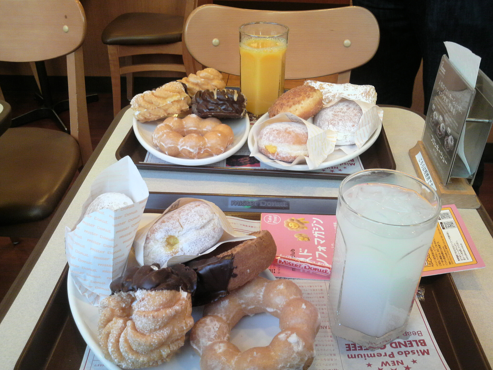
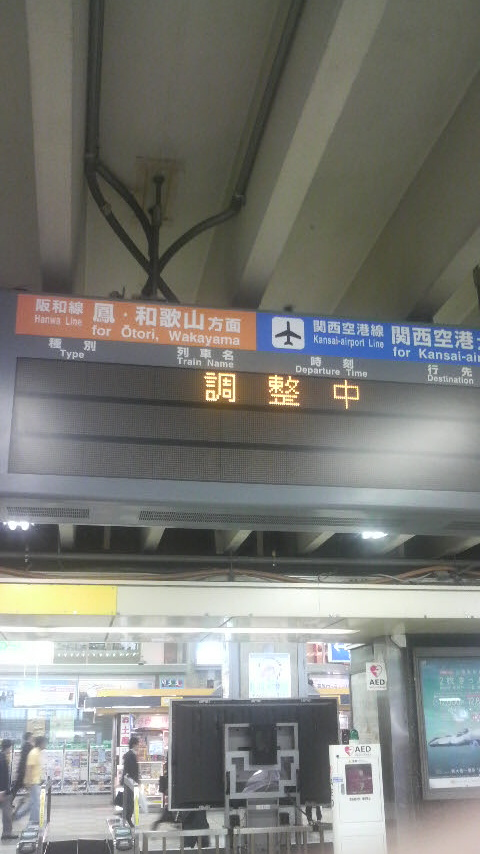
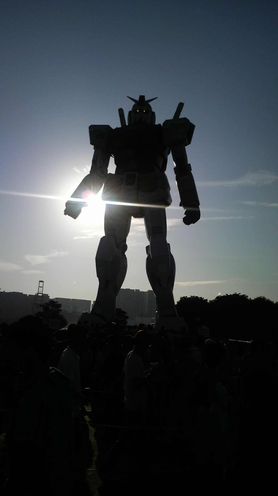
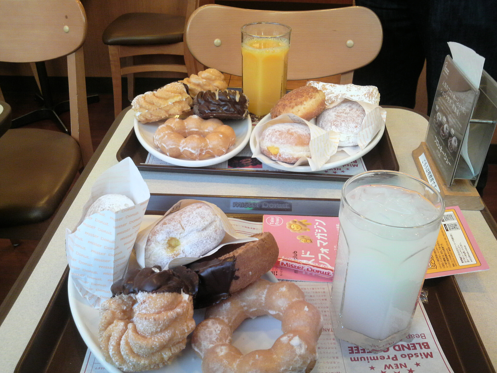
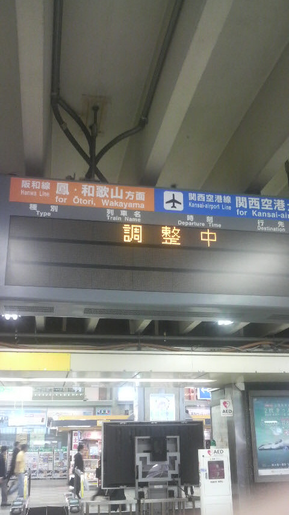
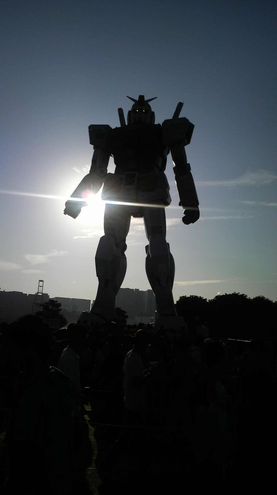

Photo
ミスタードーナツ
posted on 2009/04/22 17:33 | by tanjoin

ドーナツおいしい
調整中
posted on 2009/06/22 17:04 | by tanjoin

Q.いつ復旧しますか？
A.調整中
黒光りするG
posted on 2009/08/16 16:59 | by tanjoin

濃厚キッス
posted on 2013/11/11 15:28 | by tanjoin


ドーナツおいしい

Q.いつ復旧しますか？
A.調整中
